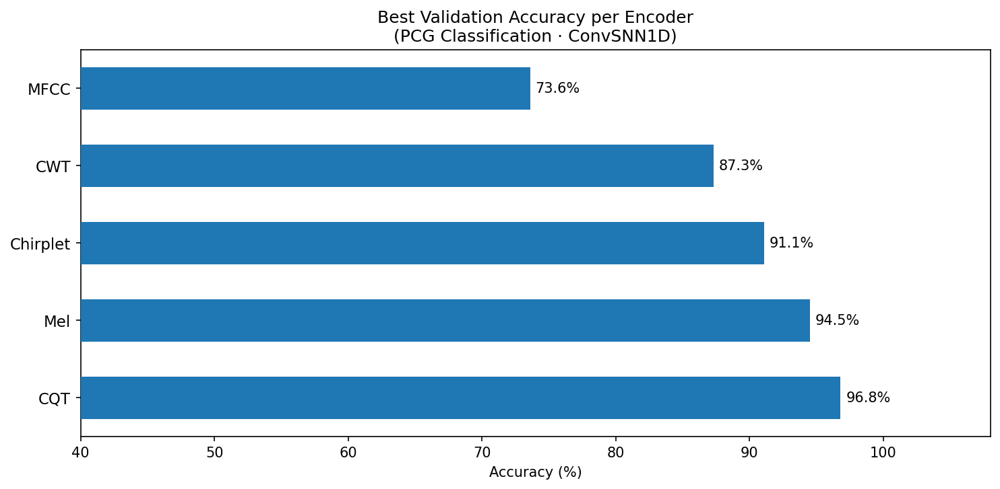
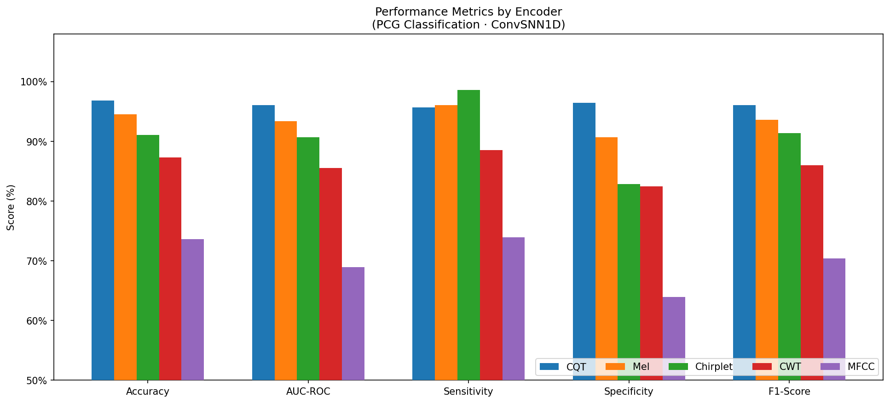
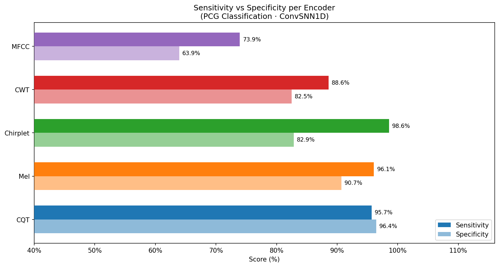
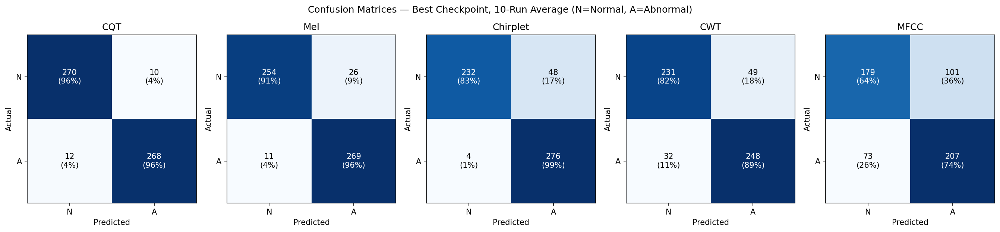
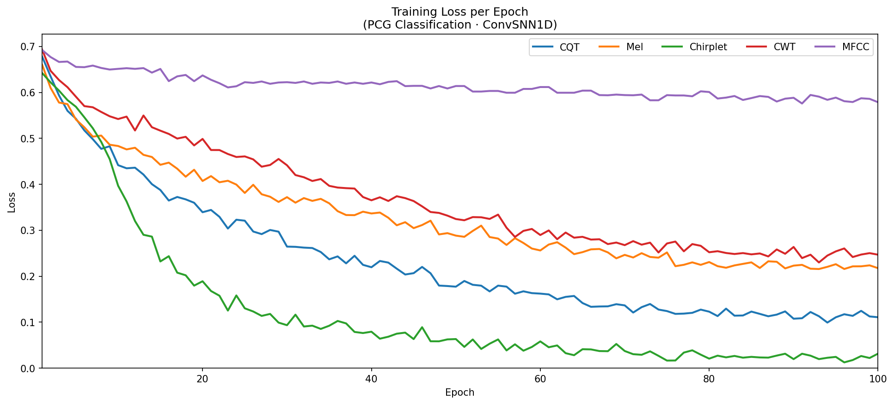
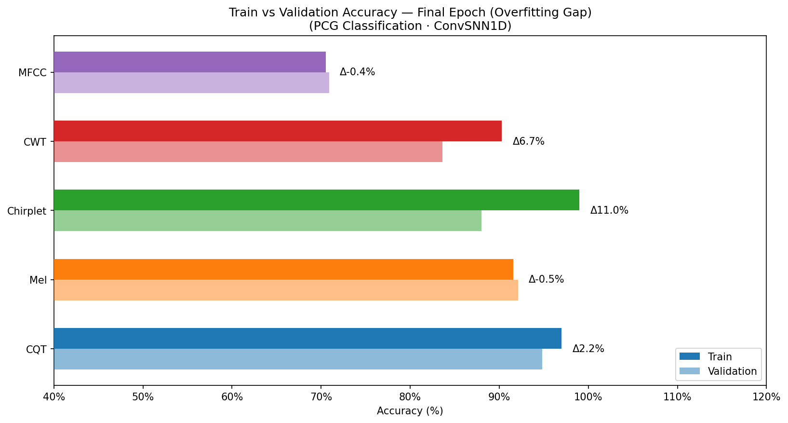

STEP 01
Signal Conditioning
PCG recordings are cleaned, normalized, and segmented into fixed-length windows.
Tools & Stack
Overview
This project targets low-power heart sound classification by combining compact neural architectures with robust time-frequency front-end representations. The model is designed for deployability on constrained hardware, while preserving high diagnostic quality across normal and abnormal PCG classes.
Training Pipeline
STEP 01
PCG recordings are cleaned, normalized, and segmented into fixed-length windows.
STEP 02
Five time-frequency transforms are generated and benchmarked under a common setup.
STEP 03
A low-parameter convolutional spiking-inspired model is trained with early stopping.
STEP 04
Best model is chosen using accuracy, sensitivity, specificity, and confusion behavior.
Dataset & Model Snapshot
Benchmark Results

Best validation accuracy comparison across feature extraction methods.

Precision, recall, and F1 breakdown for all evaluated feature pipelines.

Sensitivity-specificity trend for deployment-critical diagnostic performance.

Confusion matrix comparison showing class-level behavior across methods.

Training loss trends used to verify convergence and stability.

Generalization gap analysis to identify overfitting and robust configurations.